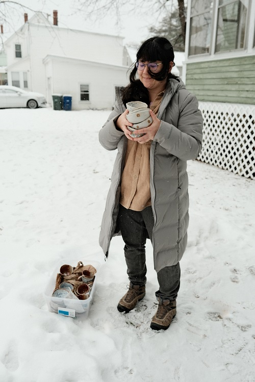
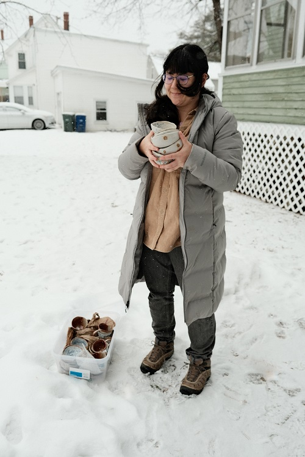

Hi again. As you already know, I’m Julien (also: Elizabeth, Mhals, etc). I‘m a potter (also: painter, illustrator, photographer, etc) who makes primarily handbuilt, illustrated, functional pottery. I live in Maine.
I have always liked drawing, and I think drawing on pottery is just the best. The wobbly surfaces of handbuilt pots (at least my handbuilt pots) are my very favorite canvases. The curved interior of a bowl is like a little window into a dreamlike world. The continuous exterior of a cup or jar is an invitation to create and explore an illustrated landscape.
My pottery worlds often feature animal characters embarking on or contemplating journeys through nature. I am inspired by the world around me, and though my illustrations are rarely direct depictions of the real world, they are informed by my photography and sketching from life. A lot of times that means my everyday surroundings in Maine, but also my memories of travels and other places I’ve lived. Other influences find their way into my illustrations too—books I have read, video games I have played, that kind of thing.
I started making pottery in 2019. And by “started making”, I do mean that I made about 6 pots at home and didn’t have them fired until a year later in 2020. Over the next year I slowly kept making pots at home and having them fired on an intermittent basis at a local community pottery studio, Portland Pottery. I became a member of the studio in 2021, and since then have become an increasingly dedicated potter with every passing year.
The thing that keeps me making pottery are the stories I hear about people using the things I make. That someone’s grandchildren love using my bowls, or that a mug I made made someone smile on a tough day—that’s what gives pottery meaning to me. My hope is always for my pots to be used in daily life to bring people whimsy, joy, and comfort.